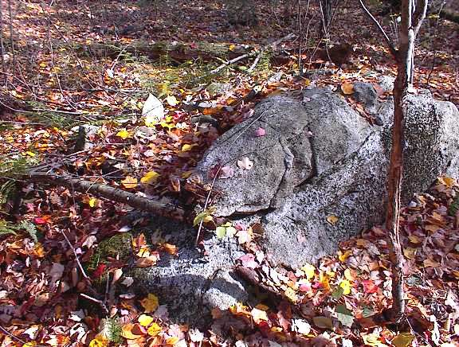
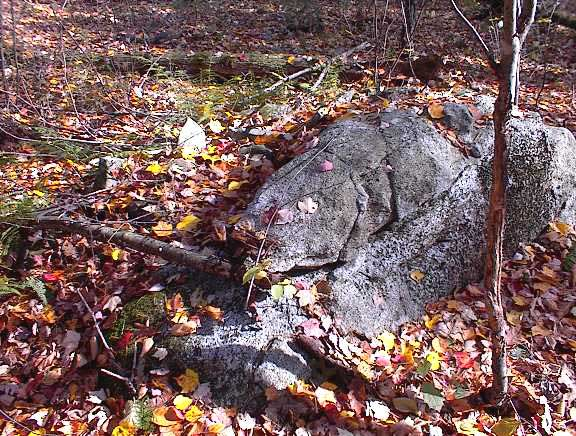
There are several types of rock piles that can be recognized and it is possible to learn where and in what topographic settings to expect them. Except for the mundane agricultural ones, rock piles seem to be manifestations left from past ceremonial activities. So, how they are situated, how they are built, and how they are inter-related to one another can be understood in terms of a presumed ceremonial function. Accordingly I propose these four broad categories:
I discuss a number of types within these categories and then attempt to plot a composite distributional map of the different types. This provides hints to the different people who might have created some of the rock piles.
These piles have individual or collective directionality: forming alignments, marking the horizon, supporting a pointer, or having a directional axes. Sometimes they are at a vantage point, with a clear view of the sky or out over water.
Characteristics: An enclosing semi-circular outline, usually three to four feet in diameter. The opening faces a particular direction with a view that often includes other rock piles. Made from fewer than twenty rocks.
Subtypes:
Placed on a support rock:
Placed on the ground, not on a support:
Built as an outline using a larger number of rocks, backed by a larger rock:
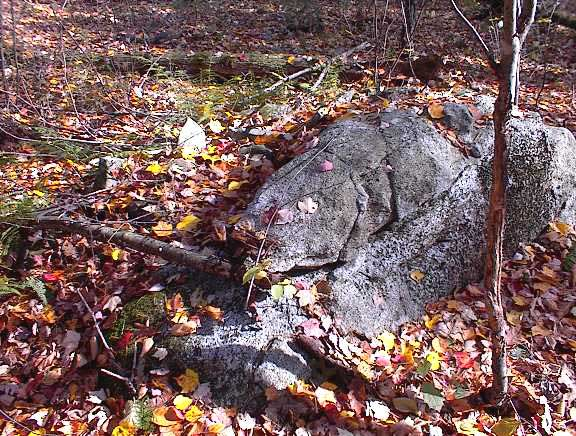
Setting: Seats are not found in isolation but as part of a multi-component site.
Range: Known examples in Billerica, Carlisle, northern Concord, Acton, and Boxborough.
Possible Function: Presumed sitting place for a participant in events at this location.
Comments: These features are generally smaller than the "U" shape structures discussed by Ted Ballard in (1) and here. For some nice examples of ground piles and rock backed seats, see also Dan Boudillion's photo's here, here, and here. (4)Characteristics: A rectangular pile, ten or more feet across, with a level top surface, made from hundreds of larger rocks. Easy to confuse with field clearing piles. Look for well graded rocks. Sometimes made from broken non-glacial rocks. Sometimes includes a retaining wall. Found at edges where higher ground drops off to lower ground. The words "Platform" and "Horizon" are used with respect to where the pile is located on a slope, as illustrated.
Subtypes:
Horizon Markers
 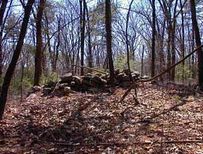
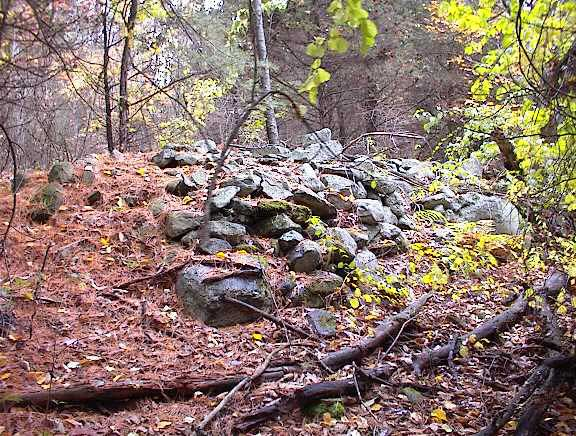
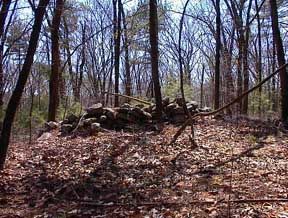
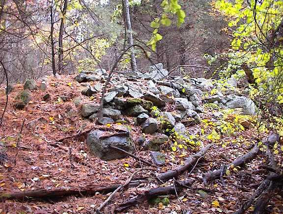
Platforms
more...
Rectangle shaped piles found on flat land (front and back pictures of a single pile, note water and quartz).
Bisquit-shaped wall bulges
These could be well made field clearing piles and are found particularly in Boxborough. They are made by incorporating a rounded retaining wall into a stone wall; which is then filled with smaller rocks. These could be very tidy field clearing piles but they often occur in proximity to other rock piles of other types. Adding to the confusion, these wall bulges look like they might be both ceremonial and the result of field clearing. For example, with respect to the third picture, another bulge in the same wall shows the outline of a room or entrance, as illustrated. This certainly is not a field clearing pile:
Setting: Found at the brow of a hill or on a shoulder of a hill. Most of the examples face southwest over water.
Range:Horizon piles have an interesting distribution: they are common to the east in Lexington and Waltham. There is one isolated group of them in Concord, and there are numerous platform and (perhaps) horizon piles in Boxborough and Stow along Rt 495. However both platform and horizon piles are rare if not absent from towns north of Concord - suggesting a cultural difference between piles in the Lexington/Waltham area versus the area north of Concord. (See also the range given for seats and for outlines and the distribution summary below.)
Possible Function: Platforms are presumed used for standing and looking out, while Horizon piles are presumed to be features on the horizon when viewed from somewhere else. The idea of piles marking events on a horizon was first mentioned in Manitou during the discussion of Pratt Hill viewed from the Upton Chamber (2).
Comments: These piles are the most easy to mix up with field clearing piles. Often a pile occurs where a field drops off into a swamp. At first it is assumed to be a field clearing pile. Look for these suspicious features: the presence of a single white rock, the general tidiness of the rock pile shape, size uniformity of the rocks in the pile, or the individual rocks being broken ledge rock and not cleared from a field. Look for retaining walls. If other types of rock piles occur nearby, this should also increase caution in making judgements about the pile.
Another common feature of large rock piles is a hollow in the side or near the top (for example the first horizon pile above). After considering this to be a possible architectural feature of certain piles, I changed my mind and concluded it is evidence of pot-hunting. Someone dug into that pile looking for treasure. It is not architecture, it is damage. I imagine that piles must have actually yielded treasure occasionally, for such damage to have been as widespread as it is.
For some magnificent examples of platform piles from Vermont, see Norman Muller's Vermont Platform Cairns (5) To me, these look more like the "wall bulges" than anything else around here.
Characteristics: A pile with a pointed rock or a vertical flake sticking out significantly higher than the other rocks in the pile.
Subtypes:
Marker pile with pointer
Marker pile with vertical flake "fin"
Setting: Not known. Needs more study.
Range: Not known
Possible Function: May provide more precise alignments.
Comments: These have been photo'ed but not observed carefully. Many stacked piles appear to have a fallen over pointers.
Characteristics: Piles with near vertical or cleanly slanted side walls, carefully made from larger rocks, occurring in lined-up groups, spaced evenly and forming a grid.
 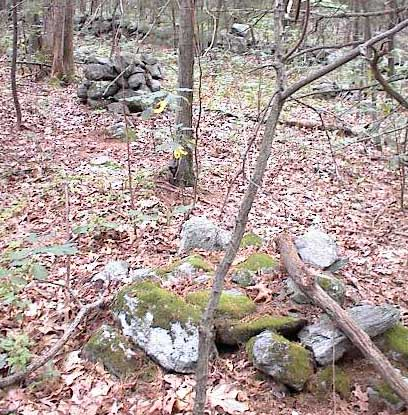
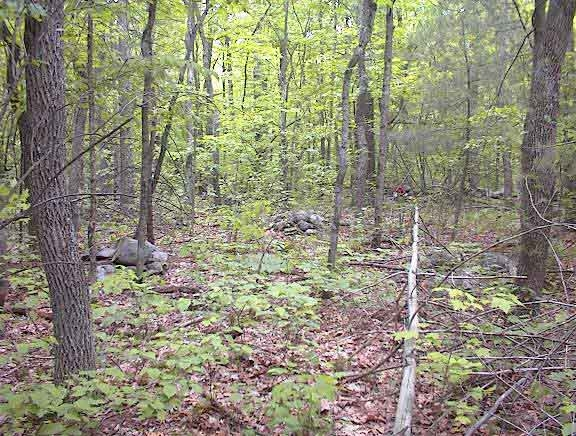
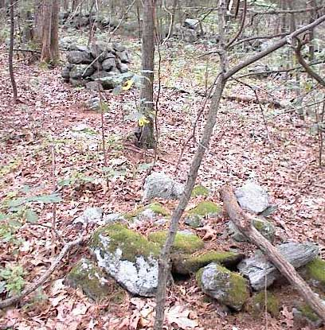
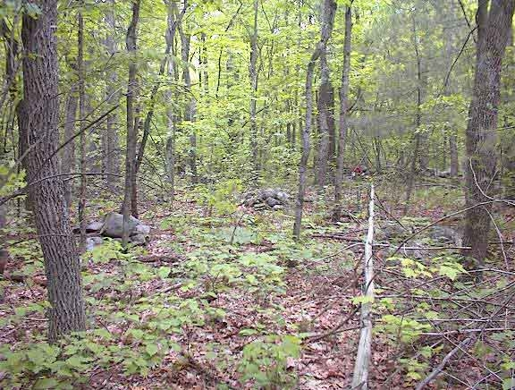
Subtypes: None known
Setting: Flat plateau not far above water, enclosed by walls.
Range: Only three examples known: two in Acton, one in Boxborough, another possible one in Stow.
Possible Function: Unknown, presumed related to detailed observing of the sky.
Comments: Would not have been easy to create accurate grids. Hard to survey and hard to photograph. These stacks may occasionally have a "pointer" stone as described earlier.
Note the use of quartz in the second example. These grid piles are one type that sometimes uses quartz. It is worth wondering if the quartz is functioning the same way here as in other places or whether it is a false to distinguish between these and other types of piles like this or this.
Characteristics: Rock-on-rock are discussed in more detail here.
Subtypes: None
Setting: Level rocky wetland
Range: Includes Boxborough, Littleton
Possible Function: Alignment to solstice sunrise/sunset and or equinox.
Comments: It has been suggested but not verified that occasionally several rock-on-rocks in a row form part of an alignment.
Effigy piles are found near sources of energy such as springs, lightening strike concentrations, and large glacial erratics. They take a wide variety of forms and often are representions of human figures, animals, or plant species. In most cases effigies are built on a larger support boulder. Occasionally they are built directly on the ground.
Characteristics: A pile, usually built on a support rock, with a larger "head" rock and an axis of symmetry. Usually contains fewer than ten small rocks.
Subtypes:
Human Figures
 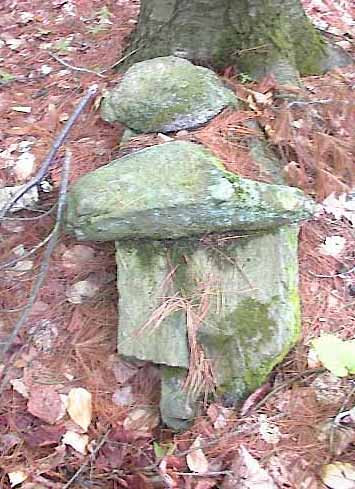
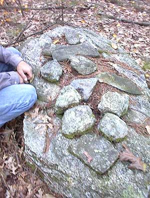
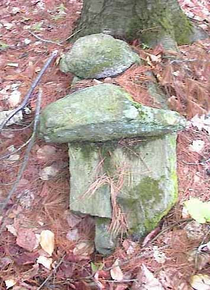
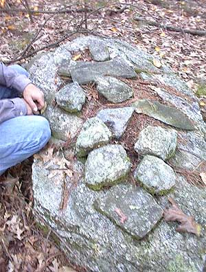
Plants, Animals
Thunderbirds
Piles using color:
Piles built on support with quartz.
Frequently turtle representations have quartz on the turtle's back (just below the middle of three highest rocks in the pile). Other types of rock piles that use quartz include platforms, burials, and grid stacks. How quartz is used in these contexts is one of the main mysteries of this subject.
Setting: Found near some form of energy souce such as a spring, a lightening strike concentration, or (occasionally) a large glacial erratic. Female effigies usually have feet towards the southeast; males have feet towards the west. Thunderbirds are found near near places with high amounts of lightening, and they usually face northwest - where storms come from. Turtles face in many different directions, but most often in a northerly direction.
Range: Found everywhere.
Possible Function: Presumed related to using the energy of a water source, a thunderstorm, glacial erratic, or a food supply.
Comments: Effigies are the most intriguing rock piles. There are other types besides the ones illustrated, including Twins and geometric shapes like spirals and zizgags.
These piles include two kinds of (suspected) burial piles as well as donation piles created to memorialize a past event or important person. The donation piles are well documented but the other types shown here are completely speculative. The term "burial pile" is applied to piles built on the well drained soil, incorporating quartz and facing out over water with a view to the west. I do not know, but strongly suspect these are burials.
Characteristics: Low to the ground, roughly circular pile with one or two pieces of quartz (occasionally white feldspar is substituted). Incorporates perhaps fifteen to thirty rocks.
Setting: "Burial" piles always appear in groups, usually enclosed by stone walls, on slightly sloping land facing out over water Usually the direction is westward.
Range: Found everywhere in north and west of Concord
Possible Function: As a grave marker.
Comments: Western facing sites with a view over water match the mythology of the land of the dead being in the west and separated from the world of the living by water. The presence of quartz and the low outline or oval of rocks all suggest burials. But it is certainly not confirmed.
Characteristics: Ground piles with an outline consisting of a "head" rock, and two parallel rows of rocks forming three or four sides of a rectangle. Often one rock of the outline is quartz. Sometimes a central "heart" occurs. Please note the shape of the "heart" in the second picture here.
Setting: Uncertain, lookout place above water, not necessarily west facing.
Range: Lexington, Concord, Weston, Western Mass. Distribution is similar to the distribution for Horizon piles.
Possible Function: Burial
Comments: These also appear to be burials because they are so similar to some European ones. The occasional presence of a heart stone (2nd and possibly 4th picture) is suggestive, and the use of quartz is similar to the oblong ground piles described above. But the difference in range and difference in style, suggests a slightly different people.
Characteristics: A conical shaped pile made from hundreds of different rocks. These piles are the most thoroughly documented and accepted type of Indian stone pile. I know of no examples from around here but Norman Muller (3) discusses a donation pile on Monument Mountain in Stockbridge Massachusetts. His photo shows what might be a reconstruction of the orginial pile:
Setting: Not known
Range:Not known but probably universal
Possible Function: Memorial to important events or people. A donation would be made by adding another stone to the pile.
Comments: This is one of the categories of rock piles most acceptable to traditional archeologists of New England. It is worth noticing the characteristic shape and size, which are easy to distinguish from some of the others shown above and below.
The conical shape is the natural shape where tossed rocks come to rest - the so called "angle of repose". Field clearing piles, described below, also frequently take this same shape. Contrast it with the shape of a well built platform pile, a stack, or a low effigy pile.
These are the piles which are modern or from the historical past, being the result of some practical agricultural task.
Characteristics: Loosely jumbled rocks of different sizes, hundreds or thousands of rocks, many flat rocks, all glacial till, found at the edge of, or near, a (once) plowed field. Sometimes occur in groups. Look for an outline with larger rocks underneath and smaller rocks filling in above. Look for odds and ends tossed on.
Subtypes: None
Setting: Edge of a field
Range: Found in agricultural lowlands of Concord, Acton, Lincoln, Carlisle, etc.
Possible Function: The removal of rocks from a field, before plowing.
Comments: Field clearing piles are another category of rock pile accepted by traditional archeologists of New England. Note the lack of structure to these piles, note the outline and the rock sizes. The last picture shows a pile at the brow of a hill which might be a horizon pile but it is also near a field, and it contains some mixture of rock sizes, so it could be a field clearing pile. In the final analysis it might not be a field clearing pile because nearby piles are quite different (in fact this seat is nearby). But in the case of the first two pictured here, other similarly un-structured piles are found nearby, re-enforcing, in these cases, that they are field clearing piles.
Characteristics: Unknown
Setting:Unknown
Range: Used throughout New England as surveyor's landmarks.
Possible Function: To fix the corner position of a property
Comments: The first illustrated pile (located by Bruce MacAlleer) is the historic boundary marker dividing Marshfield from Duxbury. It was erected in the 17th century, yet the rocks look fresh without lichen. So a three hundred year old piles can look recent.
Different sizes of boundary marker are possible depending on how much time the surveyors were able to spend building the pile. The dimensions of the illustrated pile suggest that the surveyors who built this one only spent a few minutes doing it.
Characteristics: well built with near vertical sides following a European-style of stone work which uses layering of flat rocks:
Setting: Near someone's garden
Range: Unknown
Possible Function: Unknown
Plotting some of these types gives a crude typology map which suggests cultural or temporal differences. It also shows which types might be from the same culture.

It is very tempting to take this as evidence of different peoples or time periods. However finding a single example of one of the illustrated types in another town could change the map a little, so let us leave it at this: the map is suggestive. The main visible distinction is between upland towns in the west, like Boxborough, versus lowland towns in the east, like Lexington. This corresponds reasonably well with the different watersheds (respectively) of the Assabet River and the Charles River.
There is a conservation land in Boxborough with quite a few different kinds of rock piles on a hill. Down one part of the slope is a collection of old rock-on-rocks structures. Along the trail, someone (probably the trail committee) immitated these and built new rock-on-rocks, as cairns to mark the trail. At the bottom of the hill is an old "burial" pile, with a white quartz window; and nearby someone created something that looks more modern, shaped like an animal with a white quartz head (something almost never seen). Also nearby is a huge platform pile with a ramp leading up and around to the top and nice view out over a swamp. In the swamp itself are some effigy piles built up on support rocks. Then on one edge of the conservation land, someone built a stone "folly" including a nice almost vertical sided pile next to a stone throne where, sitting like a king, you can look outward and downward over the swamp. There are also three or four old platform piles, some more tumbled than others, spotted at strategic points on the hill. Thinking about these different styles, I sense everyone who came along expressed themselves by building rock piles.
(1) For want of a Nail: An Analysis
of the Function of Some Horsehoe or "U"-Shaped Stone Structures.
Edwin C. Ballard. NEARA Journal Volume 34, Number 2, Winter 2000 & the
Bulletin of the Massachusetts Archeological Society, Volume 60, Number 2, 1999.
(2) Manitou - The Sacred
Landscape of New England's Native Civilization.
James W. Mavor, Jr. and Byron E. Dix.
Inner Traditions International, Ltd. One Park Street Rochester, VT 05767 (1989). See pp 45-55.
(3) The Cairns in our Midst:
Historic or Prehistoric?
Norman Muller NEARA Journal, Volume 37, Number 2, Winter
(4) Photos section of the NEARA web page
Gallery
(5) Fall Meeting Preview for NEARA - Vermont Platform Cairns, Norman Muller, at
platformcairns.pdf